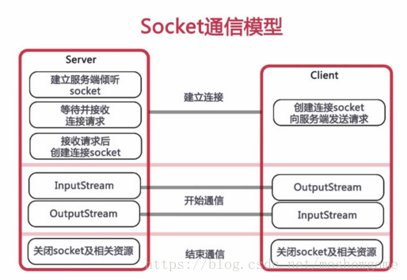

springboot集成websocket
创建时间:
阅读:

为什么有了http协议我们还需要websocket协议呢
答案很简单，因为 HTTP 协议有一个缺陷：通信只能由客户端发起，HTTP 协议做不到服务器主动向客户端推送信息。

springboo对WebSocket有良好的支持 直接引入 spring-boot-starter-websocket（spirngboot 开发不要太爽）
WebSocketConfig
启用WebSocket的支持也是很简单，几句代码搞定
1
2
3
4
5
6
7
8
9
10
11
12
13
14
15
16
17
18
19
20
21
22
23
24
25
26
27
28
29
30
31
32
33
34
35
36
37
38
39
40
41
42
43
44
45
46
47
48
49
50
51
52
53
54
55
56
57
58
59
60
61
62
63
64
65
66
67
68
69
70
71
72
73
74
75
76
77
78
79
80
81
82
83
84
85
86
87
88
89
90
91
92
93
94
95
96
97
98
99
100
|
package com.imooc.sell.config;
import org.springframework.context.annotation.Bean;
import org.springframework.stereotype.Component;
import org.springframework.web.socket.server.standard.ServerEndpointExporter;
import java.rmi.server.ServerCloneException;
@Component
public class WebSocketConfig {
@Bean
public ServerEndpointExporter serverEndpointExporter(){
return new ServerEndpointExporter();
}
}
```
重点来了
WebSocketServer
1. 可以把这个类看成一个ws协议的controller
2. 关键注解 @ServerEndpoint("/webSocket")（一定要加前面的/不加就报错！ 大坑啊） 再加上 @Component就可以启用了 @OnOpen开启连接 @OnClose关闭连接 @OmMessage接受消息
3. 新建一个set 用来存储websocket方便推送信息
4. 顺便一提 消息提醒类的需求 最好直接在方法上trycatch 不要抛 因为它毕竟只是一个消息提醒就算没有 也不能影响修改状态之类的主方法运行 不然就得不偿失 当然也得根据实际需求来
5. 需要消息推送的时候直接调用sendmessage就ok了.
```java
package com.imooc.sell.service;
import lombok.extern.slf4j.Slf4j;
import org.springframework.stereotype.Component;
import javax.websocket.OnClose;
import javax.websocket.OnMessage;
import javax.websocket.OnOpen;
import javax.websocket.Session;
import javax.websocket.server.ServerEndpoint;
import java.io.IOException;
import java.util.concurrent.CopyOnWriteArraySet;
@Component
@ServerEndpoint("/webSocket")
@Slf4j
public class WebSocket {
private Session session;
private static CopyOnWriteArraySet<WebSocket> webSocketSet = new CopyOnWriteArraySet<>();
@OnOpen
public void onOpen(Session session){
this.session=session;
webSocketSet.add(this);
log.info("【websocket消息】有新的连接, 总数:{}", webSocketSet.size());
}
@OnClose
public void onClose(){
webSocketSet.remove(this);
log.info("【websocket消息】有新的连接, 总数:{}", webSocketSet.size());
}
@OnMessage
public void onMessage(String message){
log.info("【websocket消息】收到客户端发来的消息:{}", message);
}
public void sendMessage(String message){
for (WebSocket webSocket:webSocketSet){
log.info("【websocket消息】广播消息, message={}", message);
try {
webSocket.session.getBasicRemote().sendText(message);
} catch (IOException e) {
e.printStackTrace();
}
}
}
}
|
js代码
- 首先判断浏览器是否支持websocket 太古老的浏览器不支持
- 一次写上 建立连接 关闭连接 收到消息时候 websocket发生错误 的方法
- 在onmessage的方法里写上自己需要的逻辑代码 一般都是弹框之类的
- 在离开页面之前要一定关闭websocket
1
2
3
4
5
6
7
8
9
10
11
12
13
14
15
16
17
18
19
20
21
22
23
24
25
26
27
28
29
30
31
32
33
34
35
| <script>
var websocket = null;
if('WebSocket' in window) {
websocket = new WebSocket('ws://hhwan.natapp1.cc/sell/webSocket');
}else {
alert('该浏览器不支持websocket!');
}
websocket.onopen = function (event) {
console.log('建立连接');
}
websocket.onclose = function (event) {
console.log('连接关闭');
}
websocket.onmessage = function (event) {
console.log('收到消息:' + event.data);
$('#wbmessage').append("订单号:"+event.data);
console.log();
$('#myModal').modal('show');
document.getElementById('notice').play();
}
websocket.onerror = function () {
alert('websocket通信发生错误！');
}
window.onbeforeunload = function () {
websocket.close();
}
</script>
|
转载请注明来源，欢迎对文章中的引用来源进行考证，欢迎指出任何有错误或不够清晰的表达。邮件至 wcfinyourheart@163.com
文章标题:springboot集成websocket
本文作者:wcf
发布时间:2020-01-19, 16:41:22
最后更新:2020-01-19, 17:31:58
原始链接:http://1007638786.github.io/2020/01/19/springboot%E9%9B%86%E6%88%90websocket/
版权声明: "署名-非商用-相同方式共享 4.0" 转载请保留原文链接及作者。